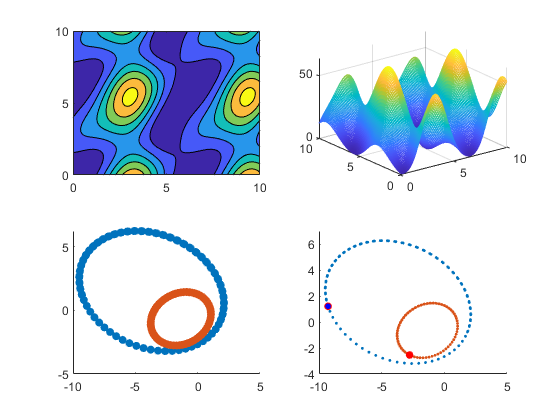

clear all;
close all;
clc;
param = [10,2, pi/8;
4,1,-pi/7];
t = 0:.1:10;
tlength = length(t);
for i = 1:2
trigMat(:,:,i) = [cos(param(i,3)),sin(param(i,3));
-sin(param(i,3)),cos(param(i,3))];
pMat(:,:,i) = [(param(i,2)-param(i,1))/2 + (param(i,2)+param(i,1))/2 *cos(t);
sqrt(param(i,2)*param(i,1))*sin(t)];
orbits(:,:,i) = trigMat(:,:,i)*pMat(:,:,i);
end
indexj = -111;
indexi = -111;
temp = 000;
[t1,t2] = meshgrid(t);
dist = 0.5.*((orbits(1,:,1)-orbits(1,:,2)).^2+(orbits(2,:,1)-orbits(2,:,2)).^2);
for i = 1:tlength
for j = 1:tlength
d(j,i) = 0.5.*((orbits(1,i,1)-orbits(1,j,2)).^2+(orbits(2,i,1)-orbits(2,j,2)).^2);
if((i==1)&&(j==1))
temp = d(j,i);
end
if(d(j,i) < temp)
indexj = j;
indexi = i;
temp = d(j,i);
end
end
end
minVal = [t(indexi),t(indexj),temp]
subplot(2,2,1);
contourf(t1,t2,d);
subplot(2,2,2);
mesh(t1,t2,d);
subplot(2,2,3);
scatter(orbits(1,:,1),orbits(2,:,1),'filled');
hold on;
scatter(orbits(1,:,2),orbits(2,:,2),'filled');
hold off;
subplot(2,2,4);
for i=1:tlength
scatter(orbits(1,:,1),orbits(2,:,1),5,'filled');
hold on;
scatter(orbits(1,:,2),orbits(2,:,2),5,'filled');
hold on;
plot(orbits(1,i,1),orbits(2,i,1),'or','MarkerSize',5,'MarkerFaceColor','b');
hold on;
plot(orbits(1,i,2),orbits(2,i,2),'or','MarkerSize',5,'MarkerFaceColor','r');
hold off;
axis([-10 5 -4 7]);
pause(.001)
end
minVal =
5.5000 4.5000 0.0687
